Company mood boards · library
Studies
One visual study per company: design, style and product-line colors read from each brand's own images. 15 studies so far; the library grows as boards are finished.
Theme references are on the Inspo page.
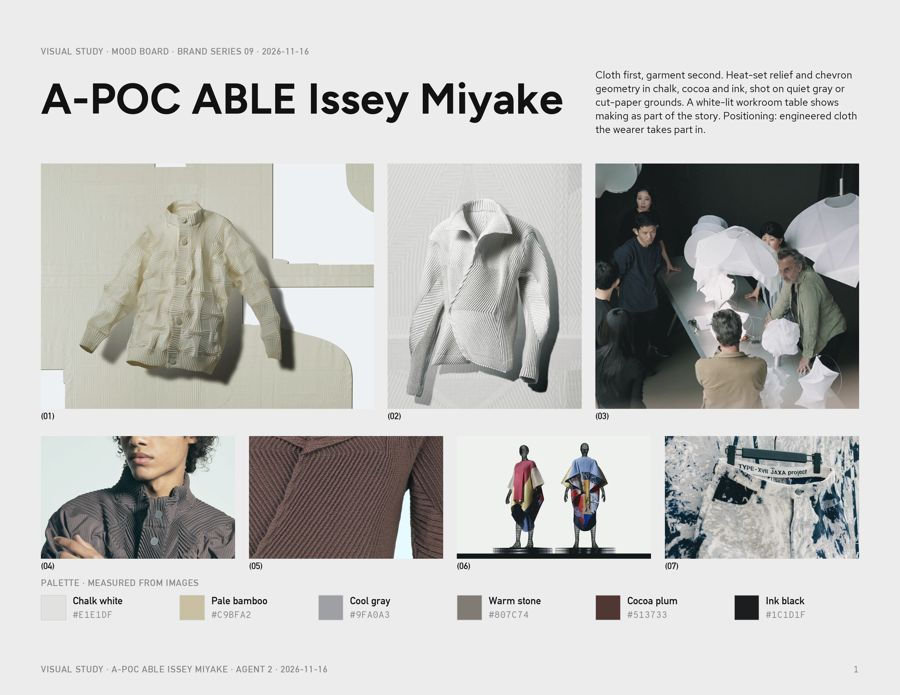
A-POC ABLE Issey MiyakeCloth first, garment second. Heat-set relief and chevron geometry in chalk, cocoa and ink, shot on quiet gray…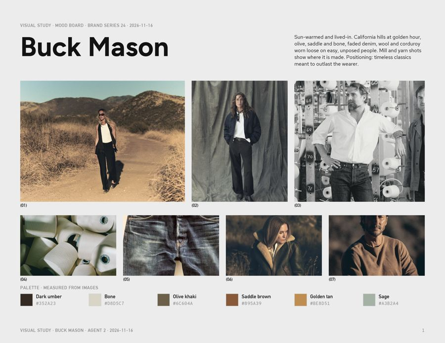
Buck MasonSun-warmed and lived-in. California hills at golden hour, olive, saddle and bone, faded denim, wool and…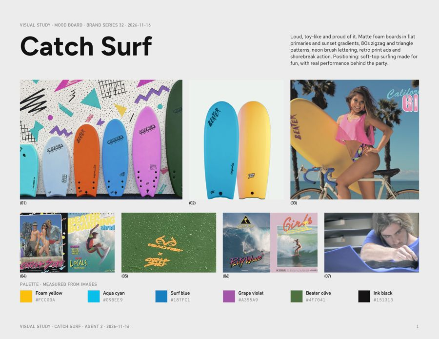
Catch SurfLoud, toy-like and proud of it. Matte foam boards in flat primaries and sunset gradients, 80s zigzag and…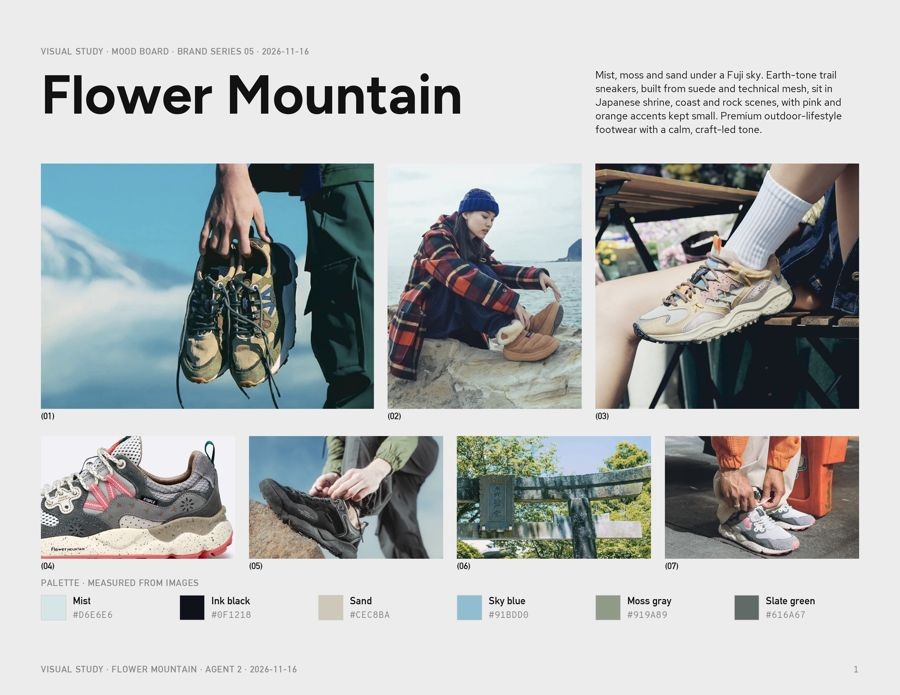
Flower MountainMist, moss and sand under a Fuji sky. Earth-tone trail sneakers, built from suede and technical mesh, sit in…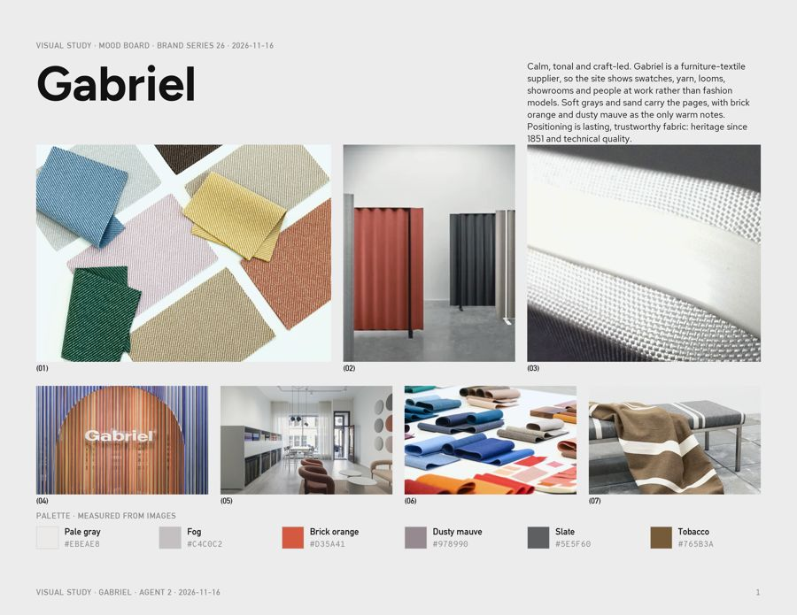
GabrielCalm, tonal and craft-led. Gabriel is a furniture-textile supplier, so the site shows swatches, yarn, looms,…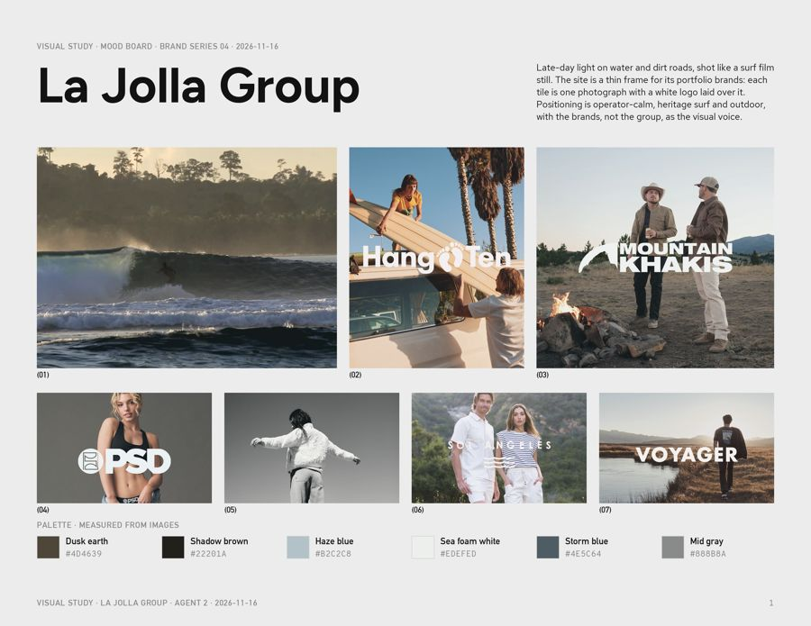
La Jolla GroupLate-day light on water and dirt roads, shot like a surf film still. The site is a thin frame for its…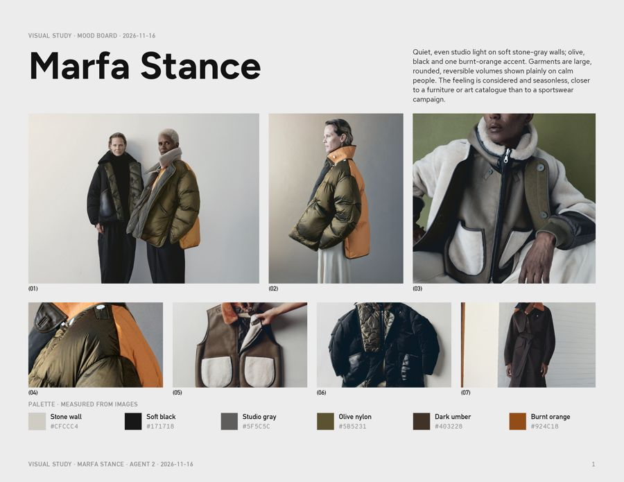
Marfa StanceQuiet, even studio light on soft stone-gray walls; olive, black and one burnt-orange accent. Garments are…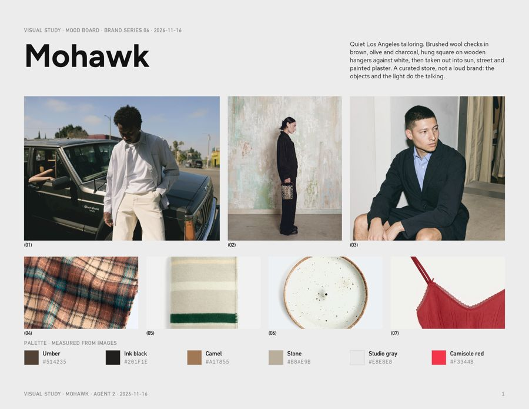
MohawkQuiet Los Angeles tailoring. Brushed wool checks in brown, olive and charcoal, hung square on wooden hangers…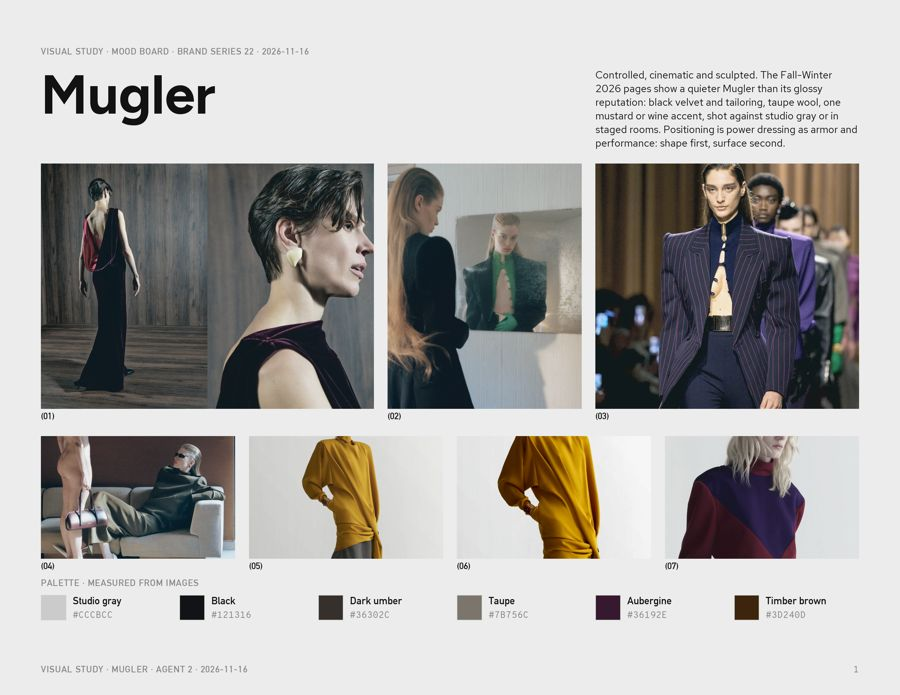
MuglerControlled, cinematic and sculpted. The Fall-Winter 2026 pages show a quieter Mugler than its glossy…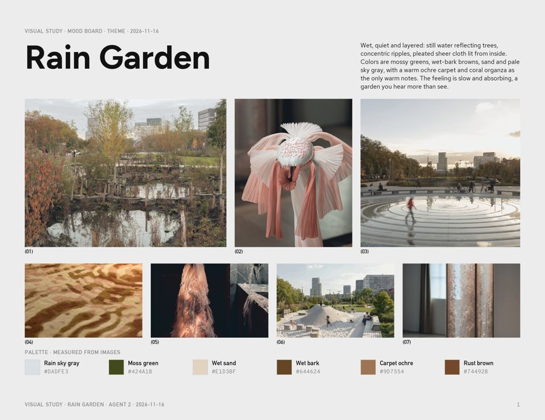
Rain GardenWet, quiet and layered: still water reflecting trees, concentric ripples, pleated sheer cloth lit from…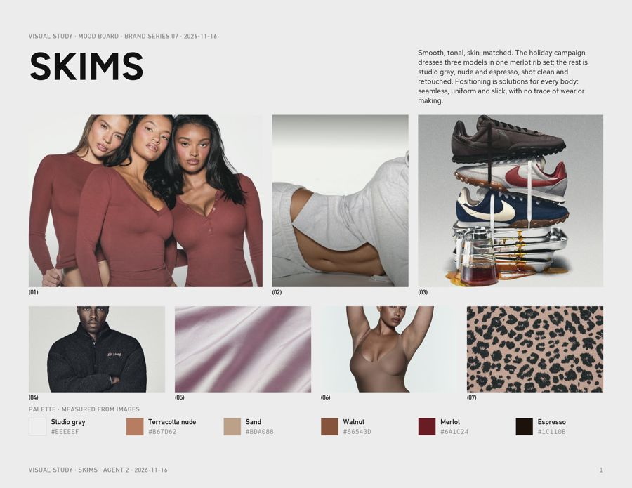
SKIMSSmooth, tonal, skin-matched. The holiday campaign dresses three models in one merlot rib set; the rest is…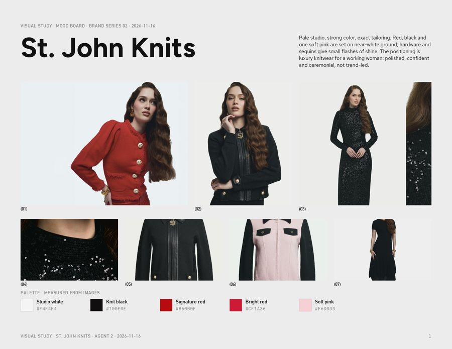
St. John KnitsPale studio, strong color, exact tailoring. Red, black and one soft pink are set on near-white ground;…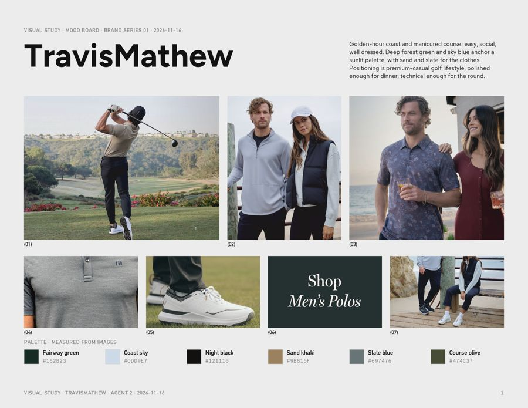
TravisMathewGolden-hour coast and manicured course: easy, social, well dressed. Deep forest green and sky blue anchor a…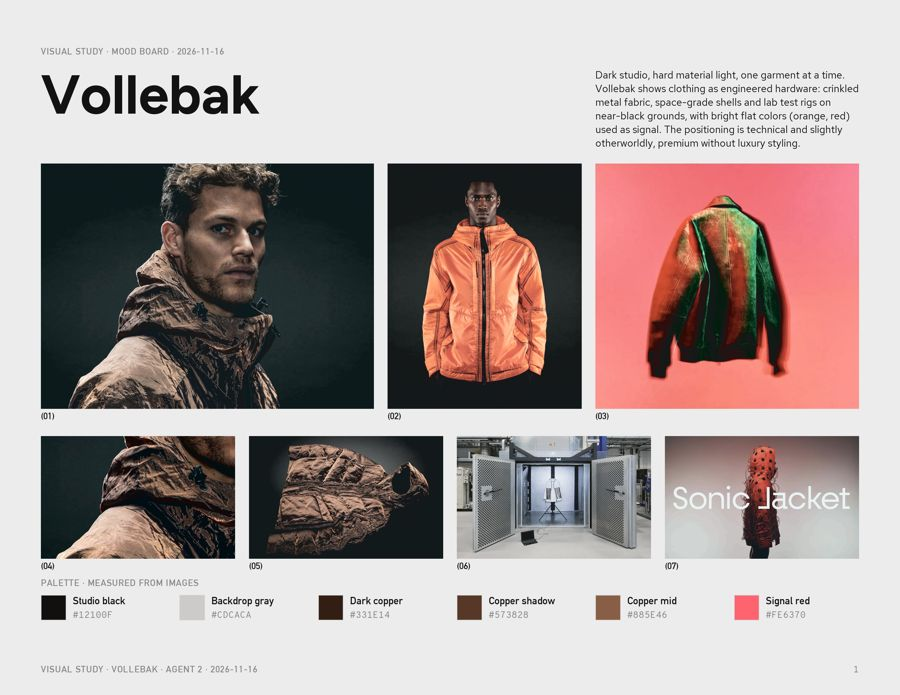
VollebakDark studio, hard material light, one garment at a time. Vollebak shows clothing as engineered hardware:…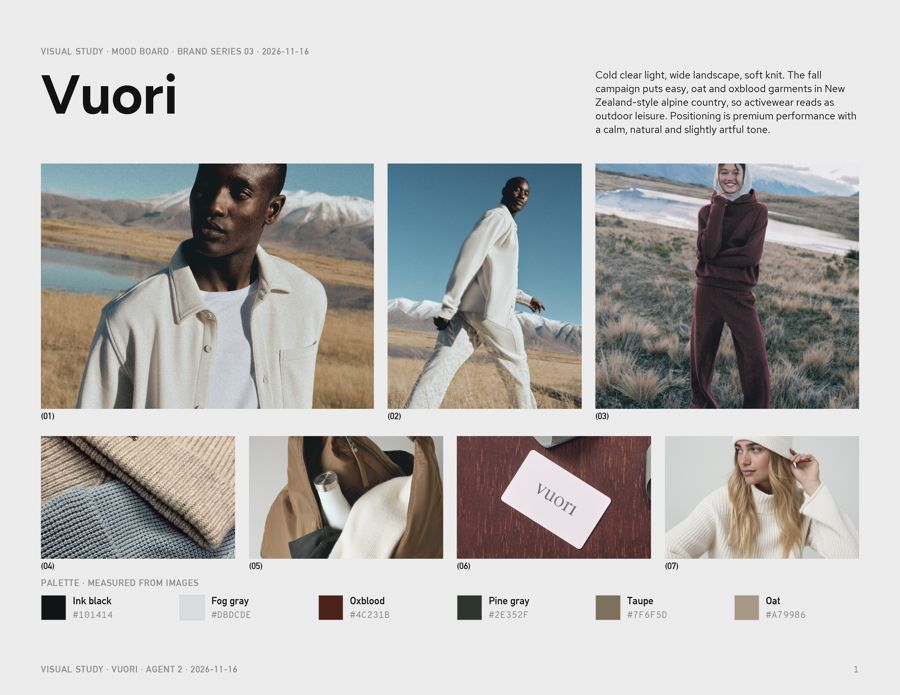
VuoriCold clear light, wide landscape, soft knit. The fall campaign puts easy, oat and oxblood garments in New…